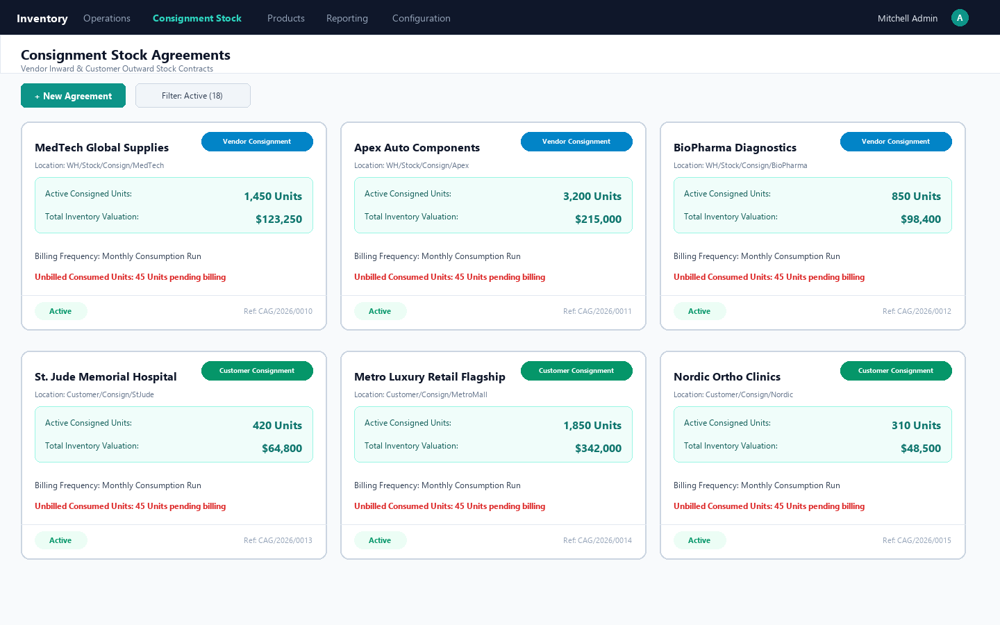
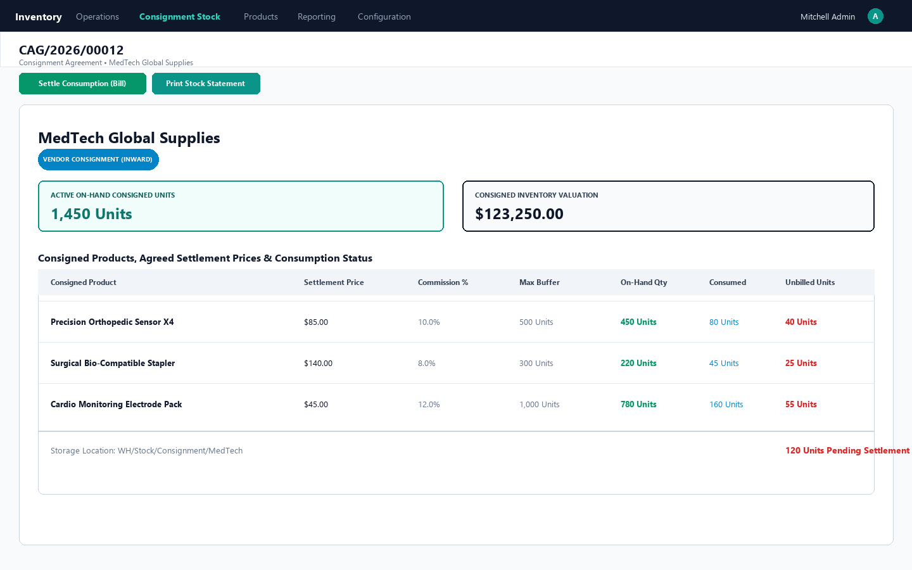
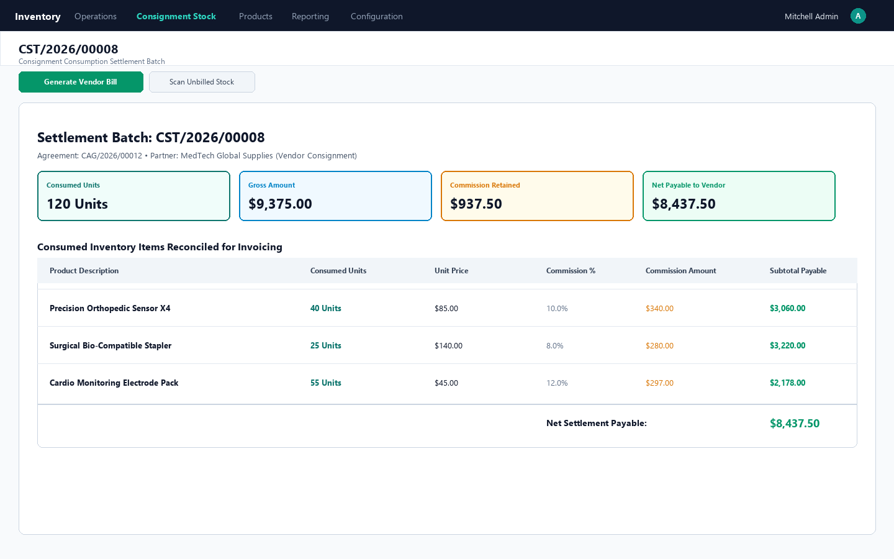
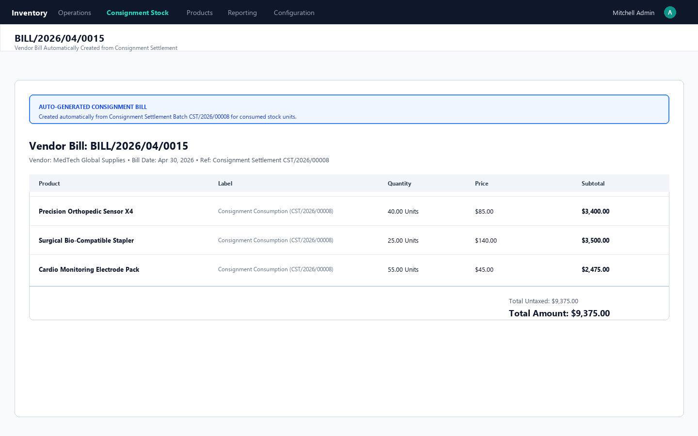
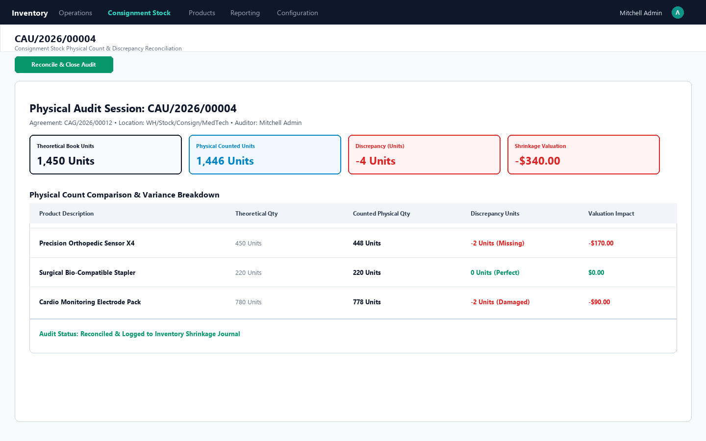
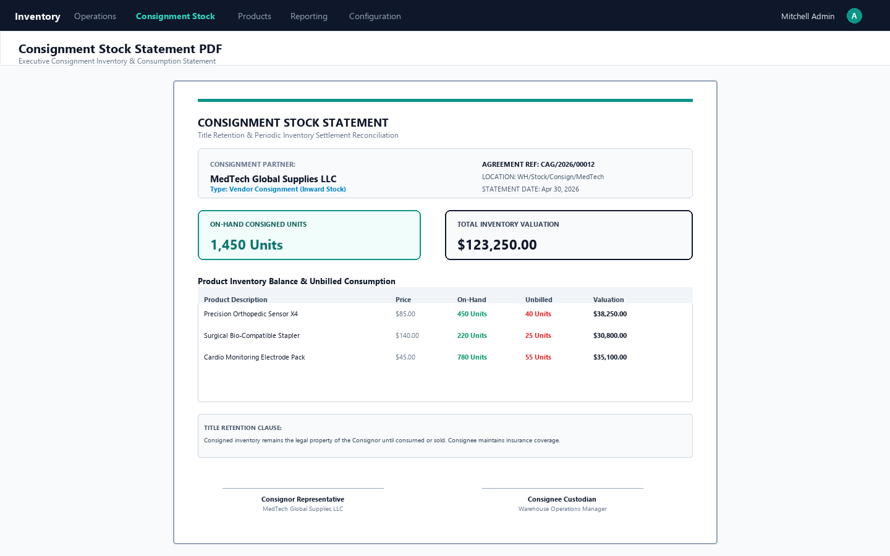

Complete Vendor Consignment (Inward) & Customer Consignment (Outward) Lifecycle Management with Automated Consumption Self-Billing for Odoo Community.
Consignment stock represents millions of dollars in retail, medical supplies, manufacturing components, and luxury distribution. In standard Odoo Community, there is no way to formalize consignment contracts, segregate legal ownership, automatically bill upon consumption, or reconcile physical consignment audits. Consignment Stock Management Hub delivers an end-to-end framework covering both Inward Vendor Consignment (supplier stock held in our warehouse) and Outward Customer Consignment (our stock placed at customer stores or clinics), automatically generating bills/invoices when items are consumed.
Everything required to manage legal title retention, consumption settlements, and audit compliance
Store supplier inventory in dedicated warehouse locations without taking immediate financial ownership or posting vendor bills until goods are consumed in manufacturing or sold.
Place your products at client retail showrooms, medical clinics, or dealer branches under title retention. Bill customers only as they report sold or consumed items.
Auto-scans stock moves leaving the consignment location. Generates Vendor Bills (for inward) or Customer Invoices (for outward) with agreed contract unit prices and commissions.
Define contractual commission percentages per product. The settlement engine computes gross amounts, retained commission deductions, and net payable/receivable figures.
Conduct physical cycle counts against theoretical consignment balances. Instantly calculate unit discrepancies, shrinkage valuations, and damaged goods adjustments.
Generate formal printable Consignment Statements showing starting on-hand inventory, consumed items, unbilled units, and dual signatures for Consignor and Consignee.
Seamless integration with standard Odoo inventory locations, stock pickings, and customer/vendor accounting
Visual kanban overview of all active Inward and Outward consignment contracts displaying physical on-hand units, total consigned valuation, and location designations.

Manage contract validity, designated stock locations, buffer limits, agreed billing prices, partner commissions, and real-time tracking of unbilled consumed units.

Single-click automated scanning of all consumed stock leaving the consignment location, calculating gross totals, commission deductions, and net payable/receivable.

Eliminate manual invoicing errors. Creates standard Odoo accounting documents linked directly to the consignment consumption batch.

Compare physical cycle count numbers against theoretical system balances. Highlights missing units, damaged inventory, and calculates net financial impact.

Executive periodic statement for suppliers or customers showing beginning inventory, consumed units, unbilled balance, and dual signature execution lines.

Follow these 7 clear steps in your Odoo database to verify the full consignment workflow from agreement to billing.
Navigate to Inventory > Configuration > Locations > New. Create a dedicated consignment location (e.g. WH/Stock/Consignment/VendorX for Inward Vendor Consignment or WH/Stock/Consignment/ClientY for Outward Customer Consignment). Set Usage to Internal Location.
Go to Inventory > Consignment Stock > Consignment Agreements > New. Select your Partner, choose Vendor Consignment (Inward) or Customer Consignment (Outward), and link your dedicated Consignment Location. In the products tab, add products, set the agreed settlement price (e.g. $85.00), commission rate (e.g. 10%), and max buffer limit. Click Activate Agreement.
In standard Inventory, create an internal transfer or receipt moving items (e.g. 100 units) into your designated Consignment Location. Return to the Agreement form: observe how On-Hand Consigned Units and Consigned Inventory Valuation automatically update in real time!
Create a stock transfer moving a portion of the consigned stock (e.g. 20 units) from the Consignment Location to your standard production line or customer delivery. On the Agreement, the Unbilled Units counter will instantly highlight 20 Unbilled Units in red.
On the Agreement form, click Settle Consumption (Generate Bill / Invoice). The system generates a new Settlement Batch and automatically populates all unbilled consumed quantities at the agreed contract unit price, computing gross totals, commission deductions, and net payable/receivable. Click Confirm Consumption.
On the confirmed settlement form, click Generate Bill / Invoice. For Vendor Consignment, a draft Vendor Bill (in_invoice) is created. For Customer Consignment, a draft Customer Invoice (out_invoice) is created with lines and prices pre-filled! Click the header smart button to open and post the invoice in Accounting.
Navigate to Inventory > Consignment Stock > Physical Stock Audits > New. Click Load Current On-Hand Stock to auto-pull theoretical balances, input counted numbers, and observe shrinkage valuation calculations. Return to the Agreement and click Print Stock Statement PDF to generate a formal 2-signature title retention statement!
| Consignment Capability | Standard Odoo Community | Consignment Stock Hub |
|---|---|---|
| Formal Consignment Contracts & Title Retention | ✗ No agreement models | ✓ Dedicated agreement contracts & terms |
| Vendor Consignment (Inward Stock Ownership) | ✗ Manual workarounds | ✓ Complete inward stock balance tracking |
| Customer Consignment (Outward Showroom Stock) | ✗ Not supported | ✓ Client location tracking & buffer limits |
| Automated Consumption Self-Billing | ✗ Manual invoice creation | ✓ 1-click Vendor Bill & Customer Invoice |
| Partner Commission Deductions | ✗ External spreadsheets | ✓ Auto-calculated gross vs net settlements |
| Physical Cycle Count Audit & Shrinkage Tally | ✗ Standard inventory only | ✓ Consignment-specific audit reconciliation |
| Formal 2-Signature Consignment Statement PDF | ✗ Not available | ✓ Executive title retention statement PDF |
Our team of certified Odoo technical architects provides free installation guidance, version upgrades, and tailored consignment integration for manufacturing, healthcare, and retail distribution.